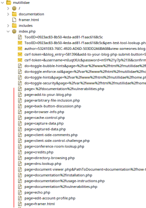

How find possible vulnerable path
Common place where find LFI
Template engines They are used to render server side data that is split in different components.
In fact in order to have most of the web application looking the same when navigating between pages,a templating engine displays:
◇
A page that shows the common static parts, such as the header, navigation bar, and footer,
◇
Then dynamically loads other content that changes between pages.
Otherwise, every page on the server would need to be modified when changes are made to any of the static parts.
example: /index.php?
page=
about ◇
index.php sets static content (e.g. header/footer),
◇ Then pulls the
dynamic content specified in the parameter, which in this case may be read from a file called
about.php.
As we have control over the about portion of the request, it may be possible to have the web application grab other files and display them on the page.
Parameter that change the directory sourceexample: GET ?
language=
XXXIf a user changes the language from a drop-down menu, then the same page would be returned but with a different language parameter (e.g. ?
language=
es).
In such cases,
changing the language may change the directory the web application is loading the pages from (e.g.
/en/ or
/es/).
If we have control over the path being loaded, then we may be able to exploit this vulnerability to read other files and potentially reach remote code execution.
• spider/crawl a website with Burp/ZAP and take note of the parameters used.
•
FUZZ the parameters with Wfuzz like we have seen in the "API Testing" chapter